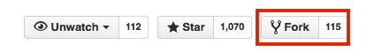
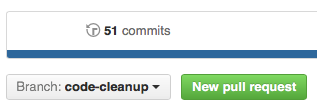

How to Contribute 
I would be very happy about any kind of contributions that help to improve and extend the functionality of biopandas.
Quick contributor checklist
- [ ] Open a new "issue" on GitHub to discuss the new feature / bug fix
- [ ] Create and checkout a new topic branch
- [ ] Implement new feature or apply bugfix
- [ ] Add appropriate unit test functions
- [ ] Run
nosetests -svand make sure that all unit tests pass - [ ] Add a note about the change to the
./docs/sources/CHANGELOG.mdfile - [ ] Modify documentation in
./docs/examples/and./docs/sources/ - [ ] Push the topic branch to the server and create a pull request
Getting Started
- If you don't have a GitHub account yet, please create one to contribute to this project.
- Please submit a ticket for your issue to discuss the fix or new feature before too much time and effort is spent for the implementation.

- Fork the
biopandasrepository from the GitHub web interface.

- Clone the
biopandasrepository to your local machinegit clone https://github.com/<your_username>/biopandas.git
Making Changes
- Please avoid working directly on the master branch but create a new feature branch:
git branch <new_feature>git checkout <new_feature>
- When you make changes, please provide meaningful
commitmessages:git add <edited_files>git commit -m '<some note>'
- Make an entry in the
biopandas/docs/sources/CHANGELOG.mdfile. - Add tests to the
biopandas/biopandas/testsdirectory. - Run all tests (e.g., via
nosetestsorpytest). - If it is a new feature, it would be nice (but not necessary) if you could update the documentation.
- Push your changes to a topic branch:
git push -u origin <new_feature>
- Submit a
pull requestfrom your forked repository via the GitHub web interface.

Notes for Developers
Building the documentation
The documentation is built via MkDocs; to ensure that the documentation is rendered correctly, you can view the documentation locally by executing mkdocs serve from the biopandas/docs directory.
For example,
~/github/biopandas/docs$ mkdocs serve
1. Tutorials
Please note that documents containing code examples are generated from IPython Notebook files and converted to markdown via
~/github/mlxtend/docs/examples$ nbconvert --to markdown <file.ipynb>
The markdown file should be placed into the documentation directory at biopandas/docs/sources to build the documentation via MkDocs.
If you are adding a new document, please also include it in the pages section in the biopandas/docs/mkdocs.yml file.
2. API
To build the API documentation, navigate to biopandas/docs and execute the make_api.py file from this directory via
~/github/biopandas/docs$ python make_api.py
This should place the API documentation into the correct directories in biopandas/docs/sources/api.
3. Building static HTML files
Build the static HTML files of the biopandas documentation via
~/github/biopandas/docs$ mkdocs build --clean
To deploy the documentation, execute
~/github/biopandas/docs$ mkdocs gh-deploy --clean